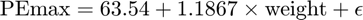
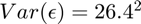
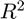
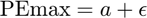
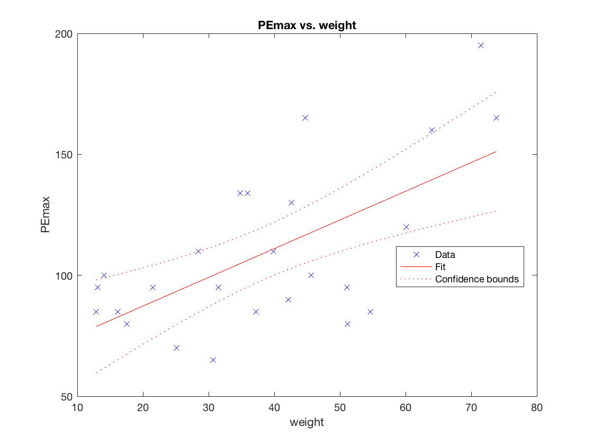
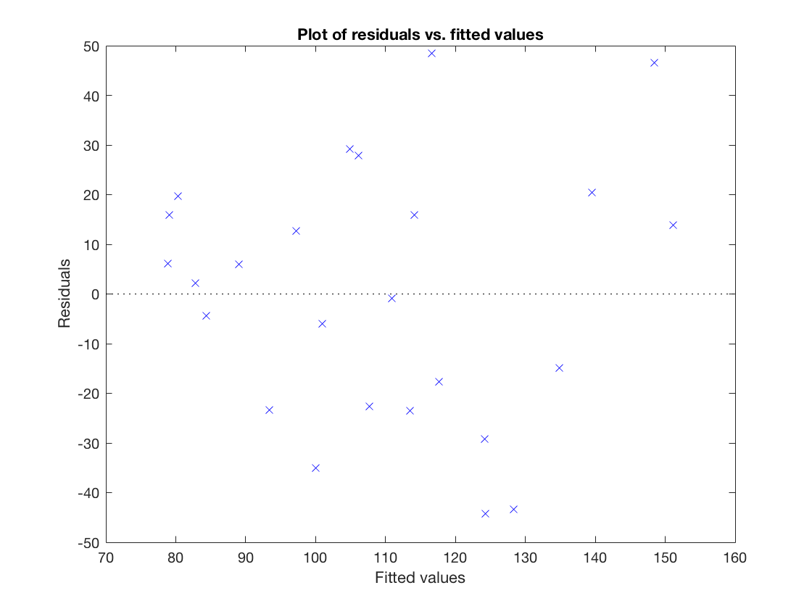
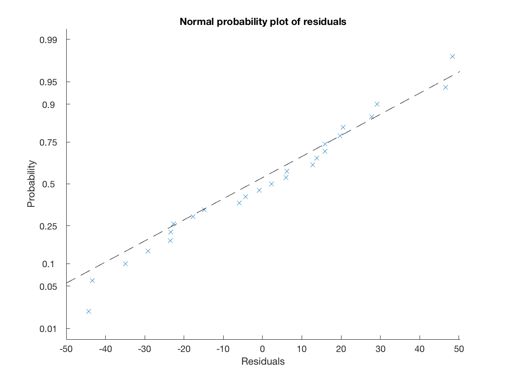
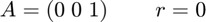

Matlab commands for linear models (Richard Wilkinson, University of Sheffield)
Here we will briefly illustrate the commands we can use to analyse linear models in Matlab. The aim here is only to give you a taste of what is possible. You should rely upon the help pages (type help fitlm for example) and google to find further information as required.
Contents
We will begin by loading the data and fitting a basic linear model, as you did in the Week 10 computer class. Notice that we have used the tdfread command here to load the data from a tab-delimited file, and then converted the object (which was of type struct) to a table, which is what is required by the fitlm command.
clear all; fib = tdfread('fibrosis.txt'); fibrosis = struct2table(fib); mdl1=fitlm(fibrosis, 'PEmax~weight')
mdl1 =
Linear regression model:
PEmax ~ 1 + weight
Estimated Coefficients:
Estimate SE tStat pValue
________ _______ ______ __________
(Intercept) 63.546 12.702 5.003 4.6303e-05
weight 1.1867 0.30086 3.9445 0.00064569
Number of observations: 25, Error degrees of freedom: 23
Root Mean Squared Error: 26.4
R-squared: 0.404, Adjusted R-Squared 0.378
F-statistic vs. constant model: 15.6, p-value = 0.000646
This gives much of the output we need. From here, we can read off the parameter estimates:

the standard error (standard deviation of those parameter estimates), e.g., our estimate of the gradient has standard error 0.30, and then the result of a hypothesis test of whether they are equal to zero or not. In this case, we find there is significant evidence that both the intercept and gradient term are significantly different to zero.
We are also told the estimated variance of the random errors, which is the root mean square error (so in this case we estimate that ) and we are told the value of  and the adjusted values (40.4% and 37.8% respectively). We are also given a value of the F-test statistic. This is the value we would find if we compared the model we have just fit to the null model, which is the model where we just fit a constant, i.e.,

Note that we can also use the following command to fit linear models
fit = LinearModel.fit(fibrosis.weight,fibrosis.PEmax);
if you wish to avoid the use of tables and prefer to work directly with columns.
Diagnostic Plots
Matlab makes it very easy to produce all of the diagnostic plots we looked at in the videos. Try the following commands to see what they produce.
plot(mdl1) figure(2); plotResiduals(mdl1, 'fitted') figure(3) plotResiduals(mdl1, 'probability')  
Transformations
Some transformations are easy to apply using the fitlm command. For example, if we include a squared term, the linear term automatically gets included.
mdl2=fitlm(fibrosis, 'PEmax~weight^2');
To include a log term is slightly harder. I find it easiest to use the variable names directly to specify the columns I want in the design matrix. For example, the command
fitlm([fibrosis.weight, log(fibrosis.weight)], log(fibrosis.PEmax));
would fit the model
Goodness of fit
To find the R-squared and adjusted-R-squared values we can simply type
mdl1.Rsquared
ans =
struct with fields:
Ordinary: 0.4035
Adjusted: 0.3776
Similarly, we can access the residual sum of squares (also known as the deviance), the fitted values, and the residuals (the first column gives the raw residuals) as follows:
mdl1.SSE; mdl1.Fitted; mdl1.Residuals;
Hypothesis testing
We will do all hypothesis testing with the coefTest command. The help page gives you all the information you need - I recommend you start by reading this. To give a brief example here, let's look at the dataset used in the video on the strength of alcoholic men.
alcos= dlmread('alcos.txt'); alco = array2table(alcos, 'VariableNames', {'height', 'strength', 'age'});
Let's begin by comparing the model that has just height as a covariate with the model that has age and height.
fit1 = fitlm(alco, 'strength~height'); fit2 = fitlm(alco, 'strength~height+age');
To do that, we need to specify the matrix A and the vector r which correspond to the constrains we wish to apply. So for example, fo go from the model that has height and age to the model that only has height as a covariate, we must constrain the third parameter (the first parameter is the intercept, the second is the coefficient of height - as can be seen if you type fit2) to be zero. We can do this with

[P F R] = coefTest(fit2, [0, 0,1], [0])
P =
0.0428
F =
4.3927
R =
1
Here P is the p-value from the test, F is the computed value of the F-statistic, and R is the number of parameters we had to constrain. In this case, we found a p-value of 0.0428, which is just enough evidence at the 5% level to reject the null hypothesis and conclude that we do need to include age in the model.
If we want to test whether either the model that has neither age or weight in the model is sufficient (ie that the null model is sufficient) then we could use
A = [0,1,0;0,0,1] r = [0;0] [P F R] =coefTest(fit2, A,r)
A =
0 1 0
0 0 1
r =
0
0
P =
0.0032
F =
6.7189
R =
2
Note that Matlab automatically carries out this test (it is called the test for the existence of regression) when it fits the model. If we look at the output from the fitting the model, you will see the last line gives the same F and p-value.
fit2
fit2 =
Linear regression model:
strength ~ 1 + height + age
Estimated Coefficients:
Estimate SE tStat pValue
________ ______ _______ ________
(Intercept) -465.63 460.33 -1.0115 0.31818
height 5.3982 2.545 2.1211 0.040498
age -3.0754 1.4674 -2.0959 0.042807
Number of observations: 41, Error degrees of freedom: 38
Root Mean Squared Error: 98.9
R-squared: 0.261, Adjusted R-Squared 0.222
F-statistic vs. constant model: 6.72, p-value = 0.00317